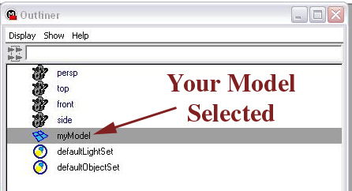
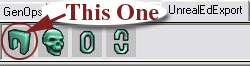
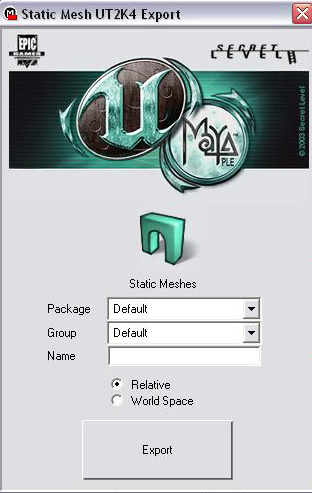
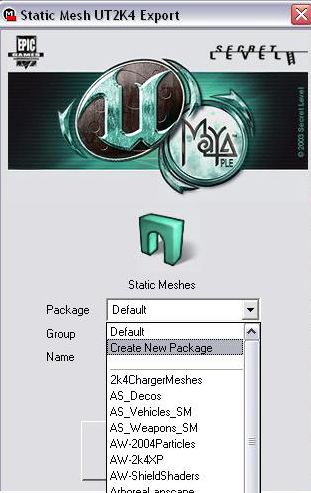
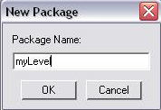
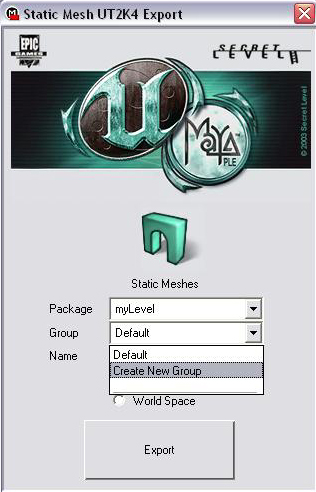
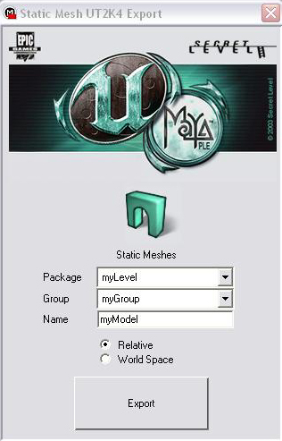

Importing Models From Maya
Prerequisites
- You should have Maya PLE installed. It can be found on the UT200x install disc.
- You should have the UnEditor.mll Maya plugin installed and enabled as a Maya plugin.
- You should be familiar enough with Maya to have a polygonal model built and ready to import into UnrealEd.
- You should be familiar enough with Maya to apply shaders, project texture alignment and manipulate polygon normals, edges and vertices.
- It may help to be familiar with other Maya tools related to modeling, including component selection tools, the various Polygon modeling tools, the Outliner, Multilister and UV Mapping tools.
Tutorial
This tutorial will demonstrate importing a polygonal model into Ued as a static mesh from Maya PLE. This is not a polygonal modeling in Maya tutorial. However, it does outline the important aspects of a Maya model ready for export to Ued.
Your Model
- Should be "facing positive X". Meaning, in Maya, the model's front side should be toward the positive end of the X-axis. This will ensure a proper orientation in Ued.
- Should be near the origin. Meaning, in Maya, the model's center should be on or near Maya's world origin, where all axis converge at zero.
- Should have its Center pivot placed in a reasonable place. For example, a wheel would likely need the center pivot in the middle, while an hammer may need the center to be along the handle somewhere. It depends on if this is meant to be used as a mover, how it should move, or how it should be normally placed as a static mesh object in UnrealEd.
- Should be one single object, not multiple objects placed together (unless you want them to be separate in UnrealEd). Use Polygon → Combine. Merge any extraneous faces, edges and vertices.
- Should have the normals facing the correct direction. Use Display → PolygonComponents → Normals to see which direction your polygonal faces are "facing".
- Should have different materials (shaders) applied to the polygonal faces that are meant to have different materials textures applied in UnrealEd. For example, you are making a car. You chassis has a texture all its own, but you want to use a simple glass material for the windshield. In this case, in Maya, you'd apply one color (material, shader) to the chassis and another color for the windshield. It doesn't matter what color, it's just an indicator to UnrealEd that these are separate materials that you'll apply in UnrealEd.
- Should have its polygon texture alignment ready to go. Use the tools found in EditPolygons → Texture → ... to apply various projection schemes (like cylindrical, planar or automatic) and adjust the scale and orientation of those projections, if applicable.
Exporting from Maya to Ued
- Select your model object.
 - If your UnEditor.mll Maya plugin is installed and enabled, you should have a button tab available called, "UnrealEdExport". Click on that and click on the "Static Mesh Export Window" button. If not already open, this will automatically launch Ued and put it in the background.
 - The Static Mesh UT2Kx Export Window will pop up. There are spaces to enter a package name, group name and model name. If you've selected your model, the model name will default to the name as it appears in Maya.
 - Select a Unreal package to export to, if you've already created one (and skip the next step). If you haven't, select "Create New Package".
 - A small window will pop up to give you a chance to name the new package. For example, to import your model as an embedded resource, enter "myLevel". (please read the warnings about using the myLevel package.)
 - Enter a group name. This is optional.
 - Enter a static mesh name, unless you want to keep it the same name.
 - You can choose to import the model based on the Relative position in Maya space, or based rigidly on the World space. This refers to the position of the object's center in Maya and its location in Maya space with relation to the origin.
- Hit the Export button.
- You should see a confirmation that, "Result: Export complete."
In UnrealEd
- Open the Static Mesh Browser.
- Find your package. Select myLevel if you chose to embed the resource.
- You should see your static mesh model, now imported.
- Assign the materials you'd like to use. You'll find there will be one Material slot available for every material shader you assigned to the polygons of this model in Maya. In our car example, there would be two material slots: one for the chassis and one for the windshield. In this case, you'd simply assign your chassis texture to one slot and a simple glass material to the other.
- Don't forget to save either your package file or your map, if the static mesh you imported is embedded in MyLevel.
Wrap up
That's it. From here you'll no doubt see things you'll want to change or alter. Perhaps you found a polygon facing the wrong way and you need to reverse that normal, perhaps you'd like to assign more shaders to different polygons to make more material slots, perhaps you need to adjust the texture projections.
Tips
- Sometimes it's a good idea to delete the modeling History (using the Delete by Type selection under the Edit menu) on your object after the model is built, but before you begin to apply texture projections and shader assignments. This is not necessary, but it helps to keep things cleaner and easy to find the aspects of your model that will need tweaking after the initial import.
External Links
- [Alias/Wavefront Maya tutorials]
- [higend3d.com Maya tutorials]
- [learning-maya.com Maya tutorials]
- [amazing3d.com Maya tutorials]
- [tutorialfind.com Maya tutorials]
Related Topics
- UnEditor.mll
- Maya
- Introduction to Maya
- Maya FAQ
- Maya PLE Character Model Tutorial
- Unreal Modeling FAQ
Discussion
SuperApe: Finished. What do you think?
SuperApe: Please don't try to link to Maya tools or properties described in this tutorial. Some terminology conflicts with Unreal terminology. That will only serve to confuse the Ued mapper.
Tarquin: Good point, I wasn't sure about linking Pivot. But surely MyLevel is the same everywhere? I linked the tools to suggest we might want to make pages for these.
SuperApe: Yes, myLevel is strictly an Unreal convention, but in this case, it would be easily confused with a simple name selection (along with myModel & myGroup), not the virutal package that it is. That's why I explicitly note to see that page and read the warnings involved in its usage. The Maya tools, windows, etc. really don't belong on this Unreal Wiki site, IMHO. I have a lot of experience with Maya, so I can tell you with certanty, if you began to fill this wiki with Maya info, it would eventually overtake the amount of Unreal info. Maya is an incredibly deep animation app and a simple link to other well-established Maya sites should suffice. There are many sites out there to help those new to Maya and they've been doing it for years. I think they'd do a much better job than anything made here, frankly.
Tgusagalpa: No offense, but 3DBuzz never explained how to get a .psk, so, could someone tell me how to get one, because I have a mesh in MayaPLE that is seriously wanting to b a .psk!
SuperApe: To get .psk (and .psa for animated meshes), you'll need to use ActorX instead. Note, there is no ActorX plug-in for MayaPLE versions, only for retail versions of Maya.